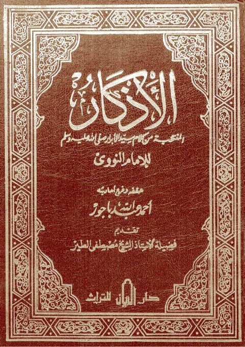
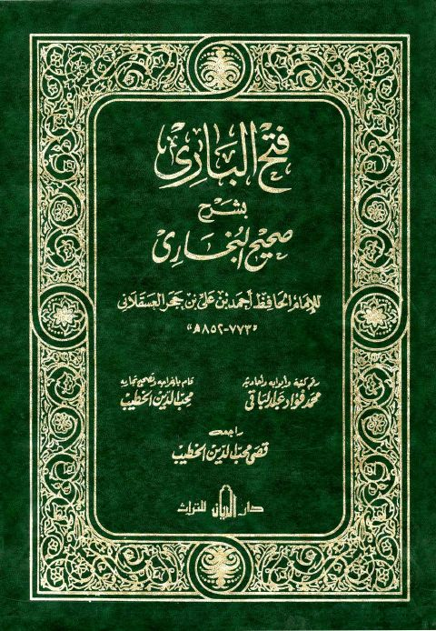
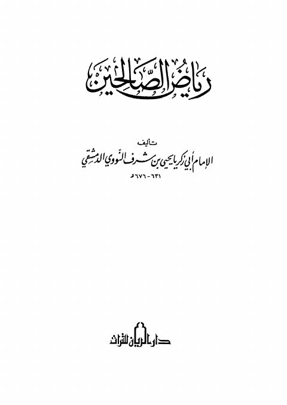
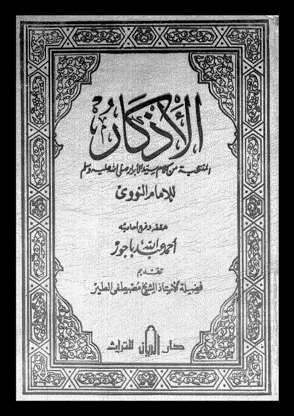

دار الريان للتراث
Publisher
Resources

الاذكار المنتخبة من كلام سيد الأبرار ﷺ وسلم الاذكار المنتخبة من كلام سيد الأبرار ﷺ وسلم يحيي بن شرف النووي
فتح الباري بشرح صحيح الإمام البخاري- ط. الريان فتح الباري بشرح صحيح الإمام البخاري- ط. الريان أحمد بن علي بن حجر العسقلاني
رياض الصالحين- ط. دار الريان رياض الصالحين- ط. دار الريان يحيى بن شرف النووي
الأذكار المنتخبة من كلام سيد الأبرارﷺ للإمام النووي الأذكار المنتخبة من كلام سيد الأبرارﷺ للإمام النووي يحيى بن شرف النووي الأذكار للنووي- ت. باجور
الأذكار للنووي- ت. باجور
يحيى بن شرف النووي
الأذكار للنووي- ت. باجور
الأذكار للنووي- ت. باجور
يحيى بن شرف النووي